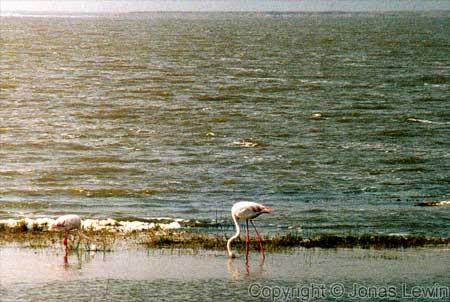
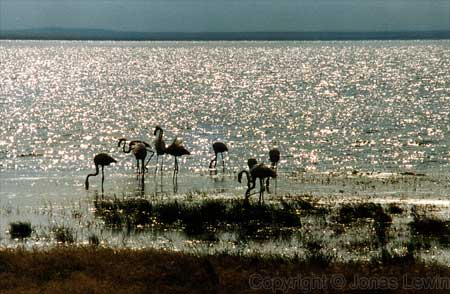

Flamingo.
|
This
is not a very large lake. At least not when you look at it from the to of
the crater wall in Ngorongoro. On the other hand, I could not at all see the
large elephants walking down inside the crater. Peaceful birds. But very boring. Just walking around there and eating. |